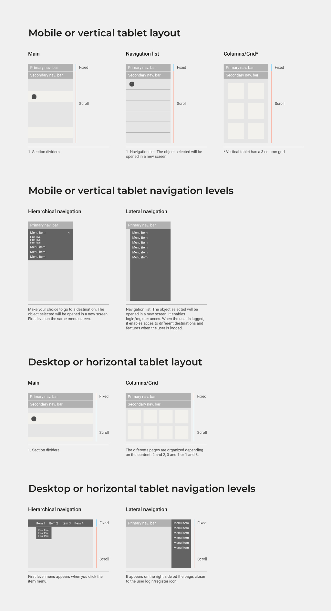
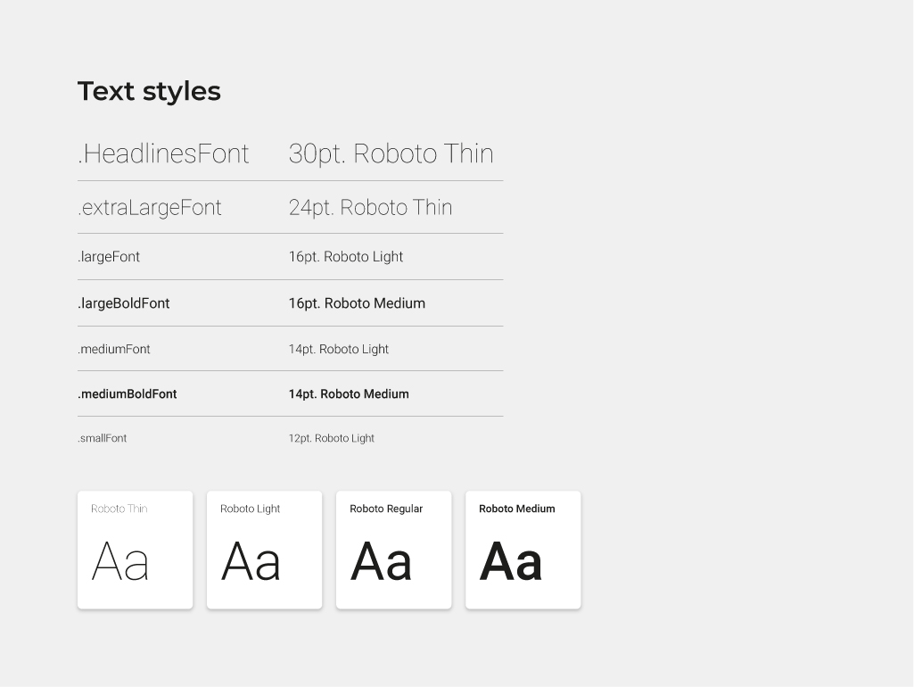
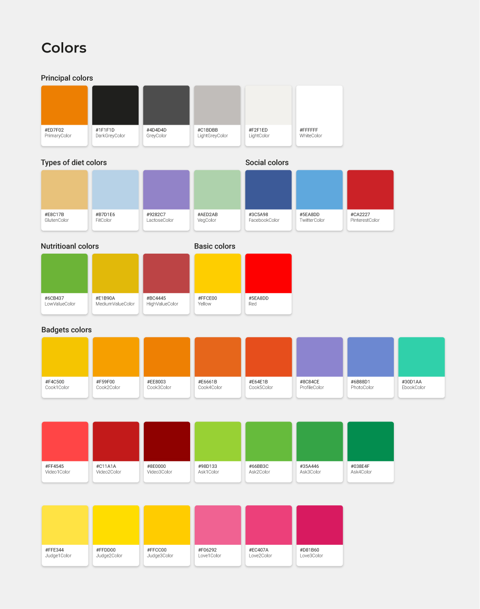
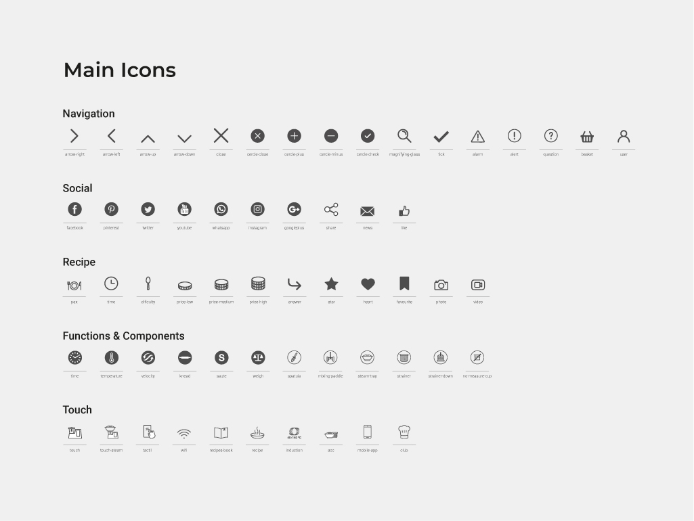
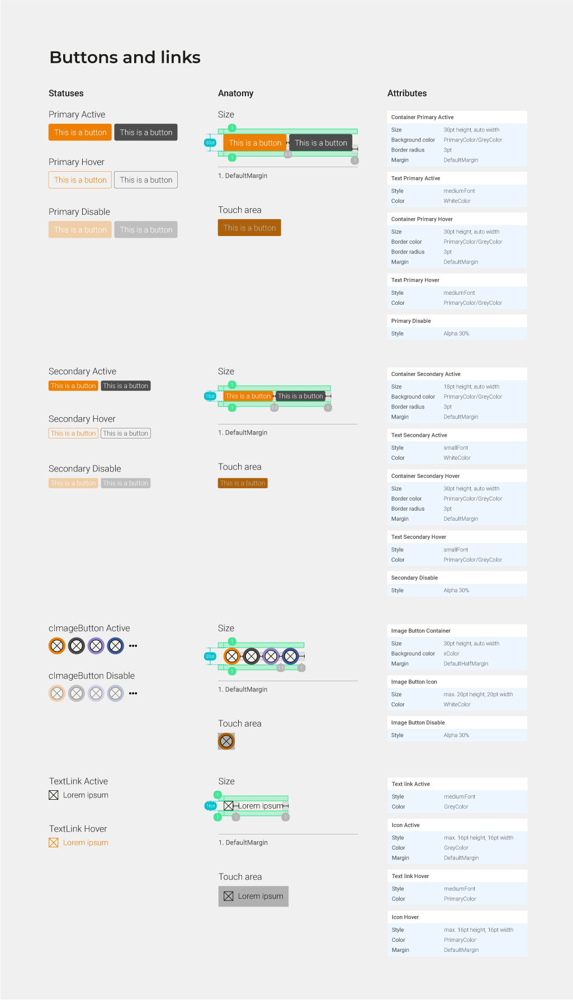
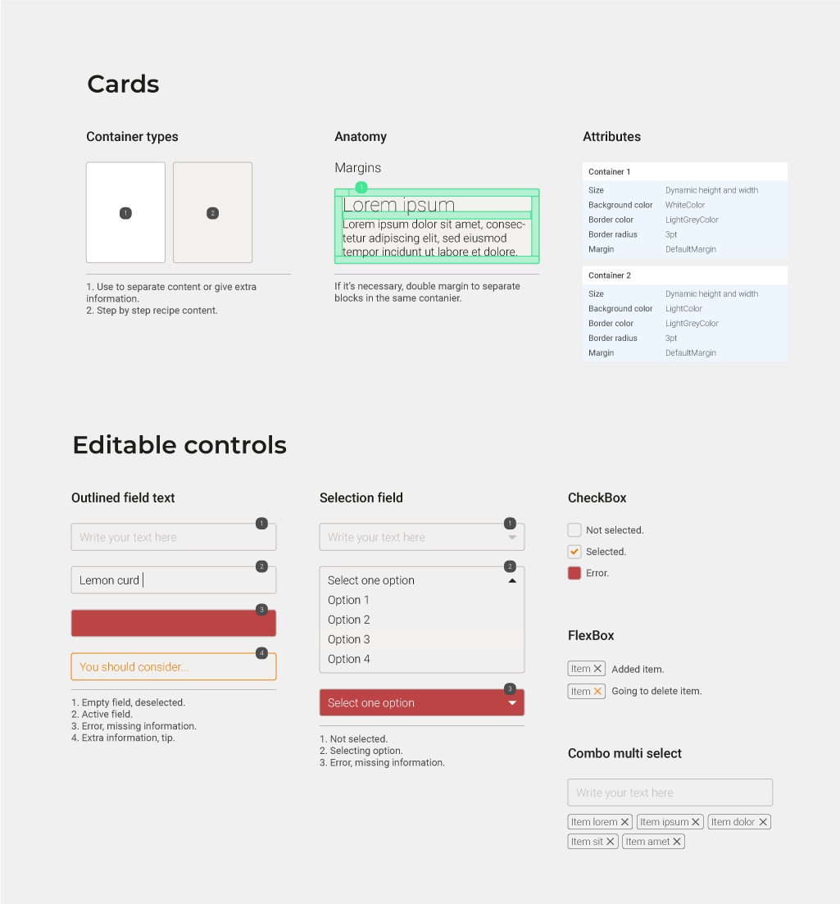
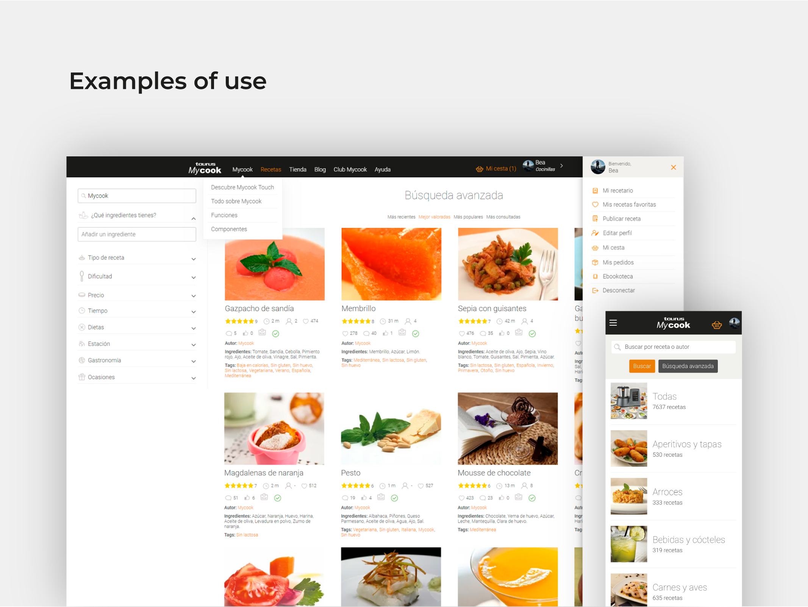
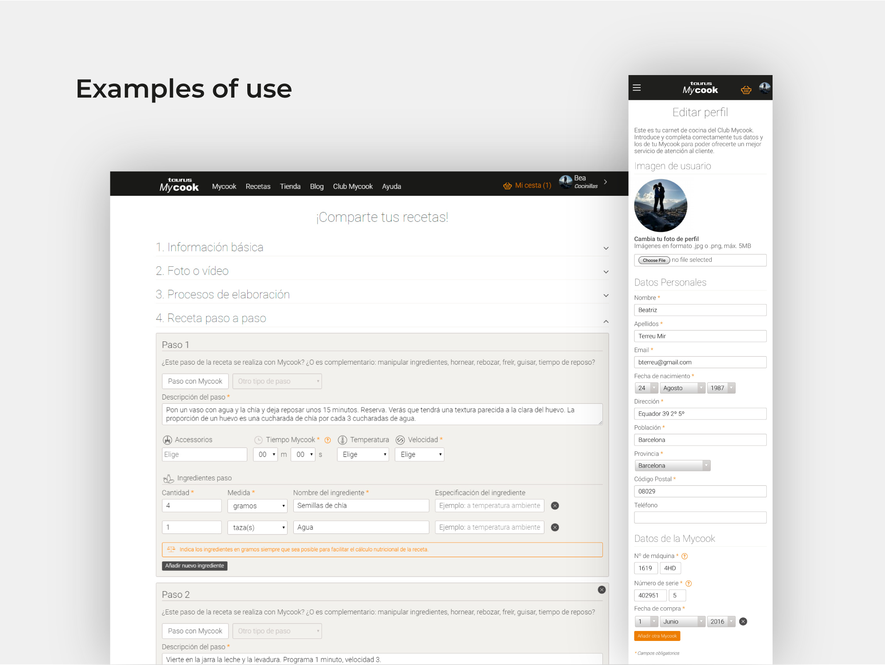
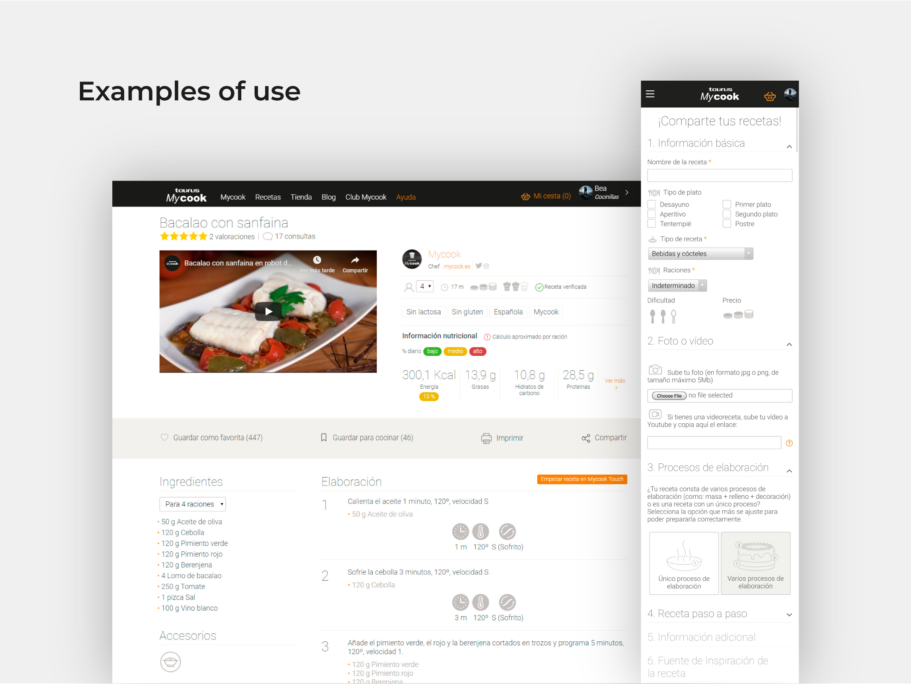

The challenge
MyCook Touch was Taurus's most ambitious product launch: a kitchen robot with WiFi, a touchscreen, synchronized step-by-step recipes and a cloud-based content ecosystem. The existing website and app did not reflect the innovation of the hardware — they were outdated, inconsistent across devices, and lacked the design system needed to support a growing product.
My role was to design the full digital experience from the ground up: define the layout and navigation system across all devices, establish the visual language, and build a component library that could support web, app, and future product iterations.
A new robot deserved a new digital experience — coherent, modern, and built to scale.
Layout and navigation levels
The first step was defining how the interface would behave across all device contexts. I documented three layout tiers: mobile and vertical tablet, and desktop or horizontal tablet. Each tier has its own layout logic (single column vs. grid), navigation pattern (hierarchical dropdown vs. lateral sidebar), and scroll behavior, ensuring the experience is consistent and predictable regardless of the user's device.

Guidelines
With the layout system established, I moved into defining the three pillars of the visual language: typography, chromatic range, and iconography. Each guideline was documented with enough detail to be handed off to development teams and reused consistently across both platforms.
Typography
Roboto was selected as the primary typeface across all weights: Thin and Light for headlines and large text, Regular and Medium for body copy and interactive elements. A named text style system was defined, from .HeadlinesFont at 30pt down to .smallFont at 12pt, giving developers and designers a shared language for every typographic decision.

Chromatic range
The color system reflects MyCook's rich content ecosystem. At its core are the principal brand colors: MyCook orange, dark grey, and white. Beyond that, the palette extends into semantic layers: dietary type colors (gluten-free, vegan, lactose-free), social platform colors, nutritional value indicators (low, medium, high), and a full badge color system for recipe classification by cook level, diet type, and difficulty. Every color decision has a purpose.

Iconography
A custom icon library was created to cover the full range of interface needs: navigation controls, social interactions, recipe-specific actions (time, difficulty, favorites, video), device function indicators (temperature, velocity, kneading, steaming), and MyCook Touch hardware controls. Each icon was designed for clarity at small sizes and optimized for both web and native app rendering.

Guidelines: components
With the visual foundations in place, I built out the component library. Every component was documented with anatomy, size specifications, touch areas, states (active, hover, disabled), and attribute definitions, ready for handoff.
Buttons and links
The button system covers primary and secondary variants across all interaction states, as well as image buttons and text links. Each variant includes anatomical breakdown, default margins, and touch area specifications, ensuring consistent interaction affordances on both mobile and desktop.

Cards and editable controls
The card system handles two types of containers: single-item cards for recipe content and step-by-step display. The editable controls section covers all form elements: outlined text fields, selection dropdowns, checkboxes, FlexBox tags, and combo multi-select components, each with full state and error documentation.

Examples of use
The design system was applied across the full website and app. From the recipe search experience on web to the step-by-step recipe upload flow, and from the detailed recipe view to the user profile area — every screen follows the same layout logic, component set, and visual language.



What I learned
Designing for a product with such a rich content taxonomy (hundreds of recipe types, dietary restrictions, cooking methods, device functions) taught me the value of semantic color systems. Rather than applying color arbitrarily, every decision serves a purpose: helping users scan recipes quickly, identifying dietary compatibility at a glance, or understanding device feedback instantly.
Working across web and app simultaneously also reinforced how much a shared layout system matters. When both platforms speak the same structural language, the handoff is faster, the experience is more coherent, and future updates are far less costly to implement.